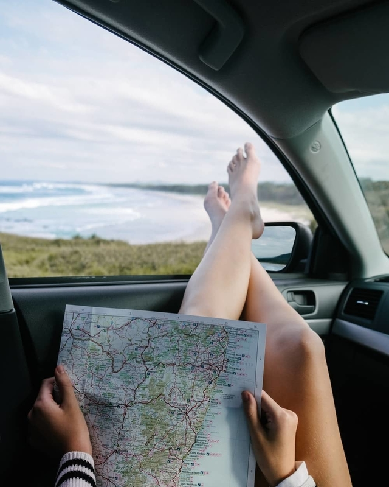
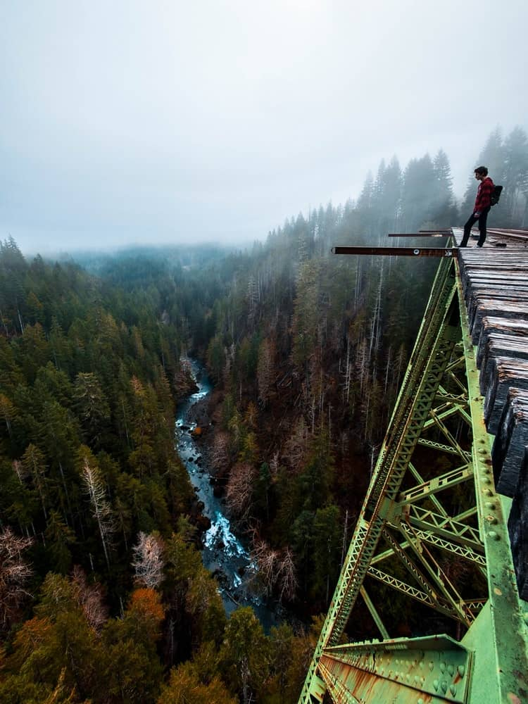

Подорожі— один із варіантів побачити світ, насолодитись його красою і неповторністю та зарядитись енергією, щоб випромінювати внутрішнє тепло.
Подорожуй
 Як подорожі роблять нас щасливішими?
- Ви станете більш впевненими в собі
- У вас з’явиться шанс відпочити від всього
- Ви отримаєте новий досвід
- Ви пізнаєте світ
- Ви навчитесь бачити позитив там, де зазвичай люди бачать лише перешкоди